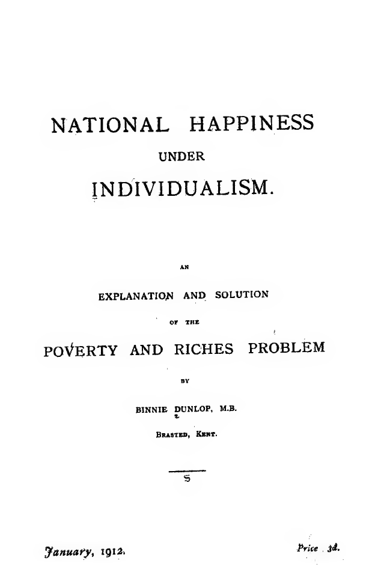

Item 69 · January 1912
Pamphlet title page: Binnie Dunlop
Download the complete original pamphlet (PDF) · Original source PDF
The document — title page

Tap the image to open it full size.
Transcription — title page only
Only the title page is transcribed below. Text in square brackets describes the page or identifies an uncertain mark; it is not part of the printed wording.
[Unnumbered title page; PDF page 3 of 24.] NATIONAL HAPPINESS UNDER INDIVIDUALISM. AN EXPLANATION AND SOLUTION OF THE POVERTY AND RICHES PROBLEM BY BINNIE DUNLOP, M.B. [Unidentified dark mark beneath “DUNLOP”.] Brasted, Kent. [Horizontal rule.] [Mark beneath the rule: 5?] January, 1912. Price . 3d.